Experience 1
A tutorial walkthrough. During the setup process, users can follow a tutorial guide style to help them understand the app’s features and privacy settings.
Redesigning privacy settings so people can see and control what a fitness app does with their data.
Back to all work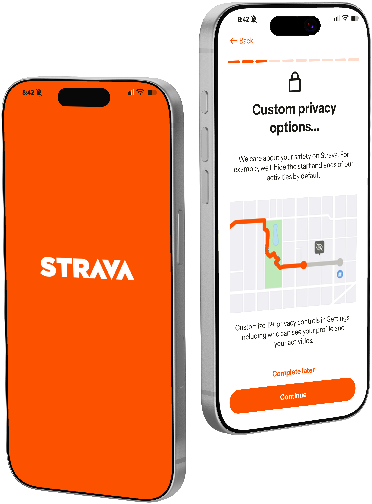
Strava is a widely used fitness tracking and networking app with 195 million users across 185 countries. The company relies heavily on user-generated content. However, finding how they use this data is buried in settings menus that are not intuitive to the user experience.
Strava is given rights via its Terms of Service (ToS) to use user-posted content and retain data even after account deletion, which is not made clear during sign-up. As users share personal information about this app, such as location, images, and activity data, they may not fully understand the extent to which their information is being used.
During the onboarding process, users are told in small greyed out lettering that their privacy settings are set to 'public' by default. After conducting independent research through external sources and interviews, it appeared that many people forgot to personalize their privacy settings until there was an incident (ex. one person had a stranger comment on her workout).
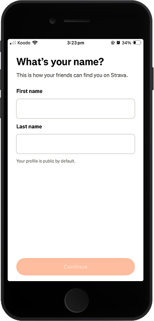
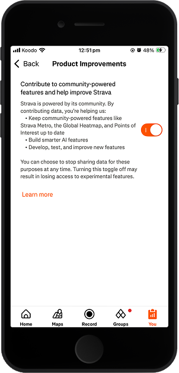
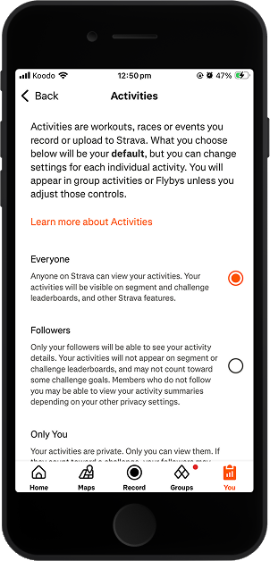
The redesigned flow increased feelings of autonomy for 80% of users. Users also felt they had greater control over their content, shifting their perception from feeling like victims of the system to active stakeholders.
Users can set privacy settings during the onboarding process, making them aware of what and how Strava is using their data from the very beginning.
Users are given more options when deciding who can see their content. Adding an 'Only You' option to all content.
All privacy settings are private by default, instead of public.
Understanding the link between users' willingness to share data and the apps they adopt
In order to understand how users engaged with privacy settings on Strava, I conducted empathy interviews with four participants to gain qualitative insight into their perceptions and behaviours surrounding data privacy.
I conducted interviews with 4 participants. Interviews were semi-structured with no fixed script. Each interview was approximately 30-45 minutes long.
Due to time constraints, I was only able to interview subjects within a specific demographic. However, if given more time, I would hope to interview more people across a broad spectrum of ages and experience to better reflect Strava’s user demographic as well as the general public's view of data transparency within fitness tracking apps.
P1
26yo female, uses Strava occasionally.
P2
26yo male, uses Strava 1‑2 times per week.
P3
32yo female, uses a Samsung health app to track fitness. Has never used Strava.
P4
31yo male, uses Apple Watch to track fitness. Has never used Strava.
Once the onboarding process was complete, it never crossed their minds to locate them, even though the setup had very little to do with setting privacy preferences. One user thought the company would automatically ask them for permission if they wanted to make something public. Another user never thought about it because they rarely went to the 'Settings' menu.
Participants were unaware of Strava’s right to all of their posted content, and didn’t like this. However, one user liked the other features Strava offered and said he would continue using it as a fitness tracker.
All participants found that privacy settings were usually difficult to access and/or understand across all fitness apps, not just Strava. They all agreed they each had a certain level of distrust of companies and how they were using their data.
Each participant already used a fitness tracker. After our conversation, one participant felt more aware of how Strava was using her data and felt more hesitant to use it. Another participant felt strengthened in her resolve to restrict access to her phone’s built-in health app as much as possible.
After gleaning key insights from the interviews, I began exploring ways I could redesign the app to address users' data & privacy concerns.
As I only had four weeks to complete the project from start-to-finish, the Guerrilla Research method allowed me to test quickly so that I could continuously iterate. Since I was able to test the design frequently, this gave me the opportunity to gather insights from multiple people. I sketched two different onboarding experiences and tested them with users:
A tutorial walkthrough. During the setup process, users can follow a tutorial guide style to help them understand the app’s features and privacy settings.
Set privacy preferences as part of the onboarding experience.
(Most liked by participants)
With a redesign in mind, I created a user flow comparing the current onboarding process with the new one. Currently, users have to navigate to their 'Settings' to personalize privacy options. In the new flow, however, users can personalize everything within the onboarding experience, reducing the number of steps. They are also given the option of completing setup later.
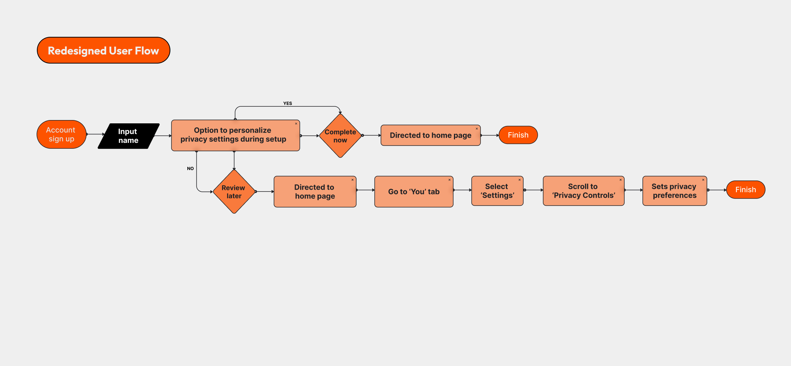
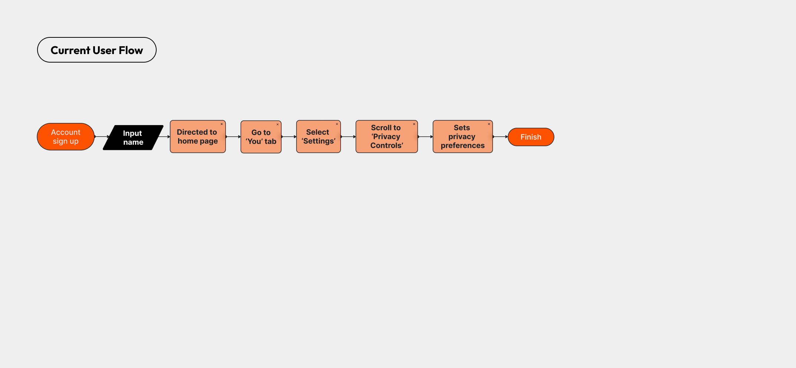
Move across the image to compare the current flow with the redesign.
I created low fidelity prototypes and continued using Guerrilla testing to refine each iteration.
Users recommended I make an ‘Only You’ option for every page. Originally, the app didn’t offer an ‘Only You’ option for the profile page, but for ultimate privacy, it would be a choice worth having. (In reality, I would collaborate with other teams, such as engineers, to know if this was a feasible option.)
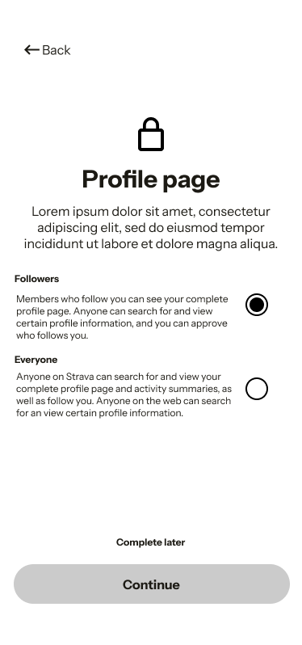
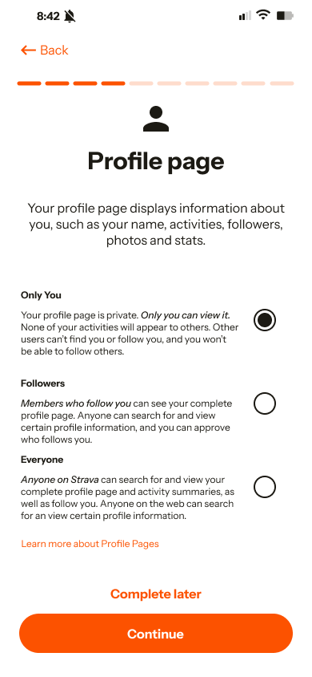
After another round of Guerrilla testing, one of the users enjoyed the experience as he felt it was similar to when he was setting up his iPhone. The entire onboarding felt intuitive and familiar. He also liked the icons at the top followed by a short description of what the page was about.
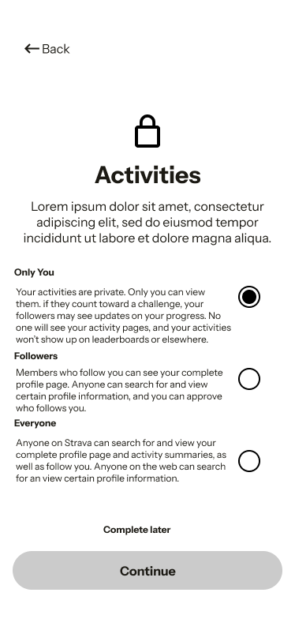
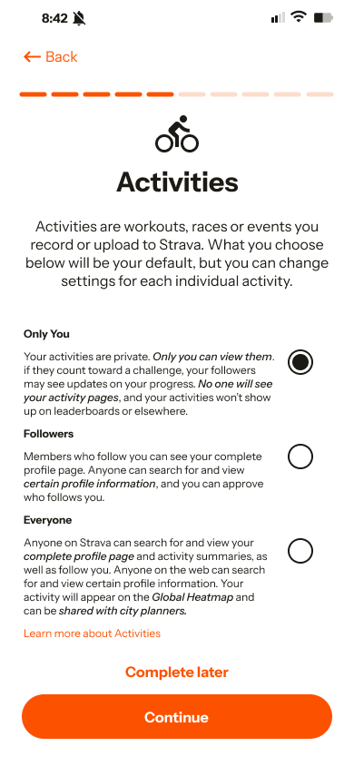
Two users felt there were too many privacy pages to read through. By the end of the process, one user was no longer paying attention to the content of the last three slides. He did appreciate that the default was set to the most private option in case he wanted to skip the setup and review later.
Another user found the amount of screens monotonous. In response to this, I inserted a progress bar for progress tracking. When tested with users, they reflected they were more likely to complete the onboarding process because they were able to calculate how long it would take them.
AfterProgress bar added to top
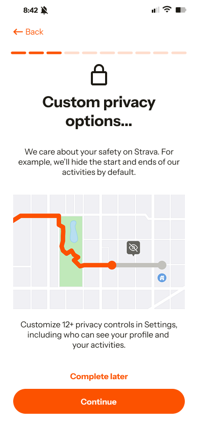
Taking input from a previous guerrilla test, I emphasized important words using italics. Users felt the change was noticeable, but didn't overpower the other content.
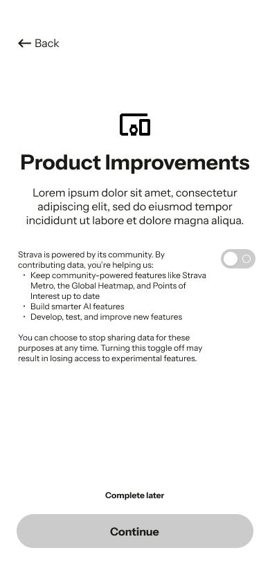
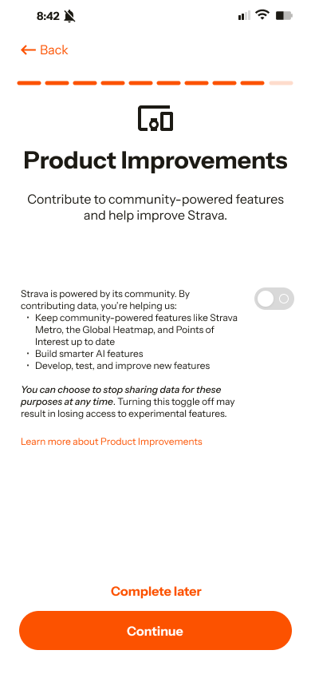
Based on the insights from the empathy interviews, I included a link on each page where users could read through the legal documentation (e.g. profile ToS, Product Improvement ToS), instead of having to find the information on their own. When tested with users, most said they would most likely not read the documentation but appreciated that the option was given to them.
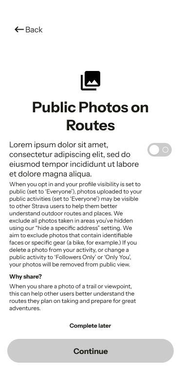
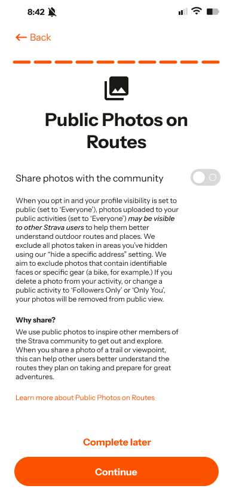
Creating the final design as a Figma prototype.
The new app experience contains an onboarding experience that provides users with clear information about how their content will be used in Strava and gives them the opportunity to set their privacy preferences at the beginning of the onboarding process.
The response from users:
High
User satisfaction
Participants felt more in control when they could set their own privacy settings, and felt Strava valued them as users and respected their data.
75%
of users more likely to keep or download the app
Guerrilla testing showed that users felt more comfortable with the redesigned app’s approach to their data. Notably, only two participants, who are uneasy about sharing health data through apps, said they would never download a fitness app.
What I learned from this experience.
As a designer I often feel constrained when designing something for the company and user. This project helped me understand that this imbalance is a part of the process as a designer. Moving forward, I want to get better at navigating how to balance the needs of different stakeholders.
I know that each person has their own unique perspective, but some interview results still managed to surprise me. This just reinforced the idea that user research is crucial for making informed design decisions.
Planning is important, especially with such a short timeline. If I could do this again, I would place greater emphasis on interviewing a larger group of people. This would allow me to get a better understanding of a) how people are using the app, and b) how to better address their privacy concerns.